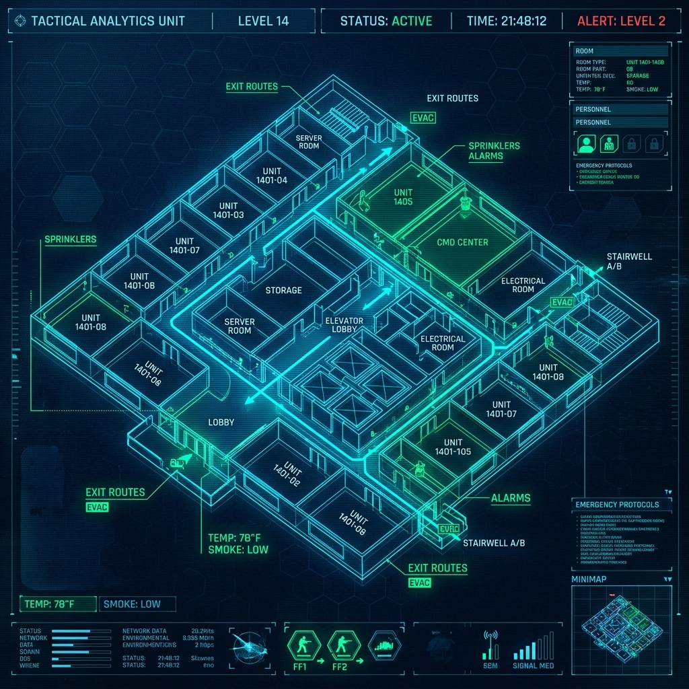

現場安全官四大核心戰技
1. 火煙動態判讀 (VVDC Matrix)
觀察火源初期的徵兆，解析煙霧的「體(Volume)、流(Velocity)、密(Density)、色(Color)」。點擊下方情境，觀察煙霧變化並閱讀分析結果。
請點擊左側情境來進行判讀...
2. 平面圖與建築空間判讀
在進入複雜結構前，安全官必須熟記平面圖判讀箴言：「梯開危險空間軟」。點擊下方口訣字卡顯示實務要領。
階梯 (梯)
開口 (開)
危險 (危)
空間 (空)
軟/逃 (軟)

⚠️ 結構崩塌徵兆 (點擊檢視)
3. MAYDAY 應變與轉型
當發生消防人員受困事件 (MAYDAY)，事故安全官必須瞬間轉型，擔任或輔助緊急救援小組 (RIT) 指揮官，建立 360 度偵測並部署後勤資源。
4. 後勤照護區管制 (REHAB)
為預防第一線人員過勞 (Overexertion)，必須落實人員去留管制 (Accountability)，進入休息區時必須達成恢復體力的四大要素。
REHAB
Rest
(休息)
(休息)
Energy
(營養)
(營養)
Hydration
(補水)
(補水)
Accomm.
(適候)
(適候)
👆 點擊各節點查看詳細內容